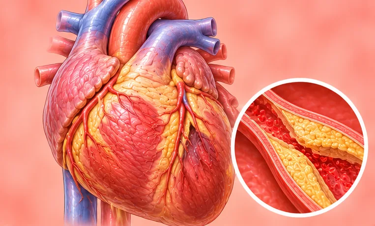

Sakit di kawasan jantung
Sakit, ketat atau tidak selesa di dada tempat jantung berada
Apa itu
Sakit di kawasan jantung ialah rasa tidak selesa di dada kiri atau tengah. Ia mungkin datang daripada jantung, tetapi sering juga daripada otot, esofagus atau rasa bimbang.
- Dada kiri atau tengah
- Boleh dialami orang dewasa
- Sengal, ketat atau menusuk
- Jumpa doktor
- Doktor keluarga atau pakar jantung (kardiologi)
- Biasa pada
- Orang dewasa semua umur; lebih kerap pada yang berdarah tinggi, diabetes atau merokok
- Berjangkit
- Tidak
- Perjalanan
- Bergantung pada puncanya; sakit dada sentiasa perlu diambil serius
Tanda biasa

Dada rasa ketat dan beratDada sesak 
Semput bila naik tanggaDispnea semasa bergiat 
Jantung berdebar kencangDebaran jantung 
Rasa hendak pengsanHampir pengsan (presinkop) 
Sakit tajam semasa menarik nafasSakit dada pleuritik
Mengapa ia berlaku

Asid naik dari perutRefluks asid 
TekananTekanan psikologi
Punca lain
- Aliran darah ke otot jantung berkurang
- Otot dinding dada atau tulang rusuk tegang
- Keradangan di sekeliling jantung atau paru-paru
Jumpa doktor dahulu jika
- Sakit, tekanan atau rasa ketat di dada yang berlarutan lebih beberapa minit: hubungi 999
- Sakit merebak ke lengan, leher, rahang atau belakang: hubungi 999
- Sakit dada dengan peluh sejuk, sukar bernafas, rasa mual atau pitam: hubungi 999
- Sakit yang datang semasa berjalan atau bertenaga dan reda apabila berehat
- Sakit dada dengan demam, atau sakit menusuk apabila menarik nafas
Jika mana-mana berkenaan, sila jumpa doktor sebelum sesi.
Halaman ini ialah maklumat am. Sila terus mengambil ubat biasa anda dan terus berjumpa doktor.
Teruskan mengambil ubat biasa anda dan terus berjumpa doktor. Sesi kami ialah sokongan lembut dan tidak menggantikan rawatan perubatan.
Menjaga diri

Periksa tekanan darah di rumahPemantauan tekanan darah di rumah 
Berhenti merokokBerhenti merokok
Lebih banyak cara menjaga diri
- Berhenti dan berehat jika sakit bermula
- Jangan tunggu jika tanda-tandanya teruk; dapatkan bantuan
Beritahu ahli terapi anda
- Penyakit jantung
- Tekanan darah tinggi
- Perentak jantung atau implan logam
- Ubat pencair darah
- Diabetes atau deria kulit berkurang
Ahli terapi anda akan menyemaknya bersama anda sebelum bermula.
Soalan dan jawapan
Apakah Sakit di kawasan jantung?
Sakit, ketat atau tidak selesa di dada tempat jantung berada. Sakit di kawasan jantung ialah rasa tidak selesa di dada kiri atau tengah. Ia mungkin datang daripada jantung, tetapi sering juga daripada otot, esofagus atau rasa bimbang.
Apakah tanda biasa Sakit di kawasan jantung?
Dada rasa ketat dan berat · Semput bila naik tangga · Jantung berdebar kencang · Rasa hendak pengsan · Sakit tajam semasa menarik nafas
Mengapa Sakit di kawasan jantung berlaku?
Asid naik dari perut · Tekanan
Bagaimana menjaga diri dengan Sakit di kawasan jantung?
Periksa tekanan darah di rumah · Berhenti merokok
Bolehkah sesi AI Body Master membantu Sakit di kawasan jantung?
Sesi ialah sokongan meridian tanpa jarum yang lembut untuk kesejahteraan anda. Ia tidak merawat atau menyembuhkan Sakit di kawasan jantung dan tidak menggantikan ubat atau doktor anda. Beritahu ahli terapi anda sebelum sesi bermula.
Keadaan berkaitan
Rujukan: General information based on public health sources such as Mayo Clinic, NHS, Cleveland Clinic and NCBI StatPearls.
Halaman dikemas kini: 2026-11-05